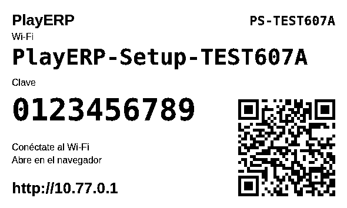
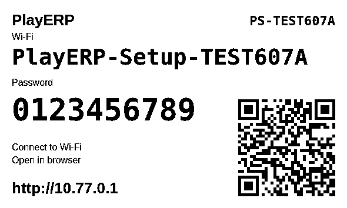

Tamaño nominal CSS; la pantalla requiere calibración. Los PNG incluyen resolución de11800 píxeles/metro (299,72 dpi, nominal 300 dpi). Para papel:100%, sin ajustar a página. Estas credenciales son ficticias.


Escaneo físico pendiente de Beny. El remuestreo digital a203dpi no demuestra escaneo térmico.